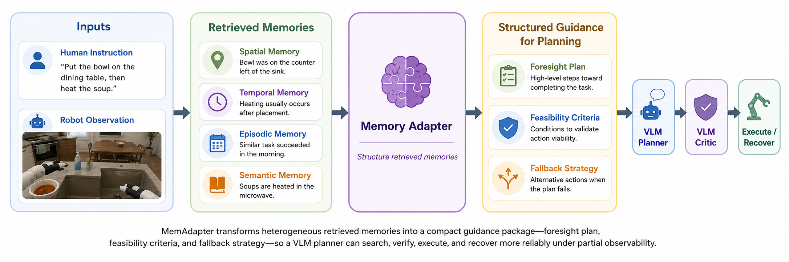
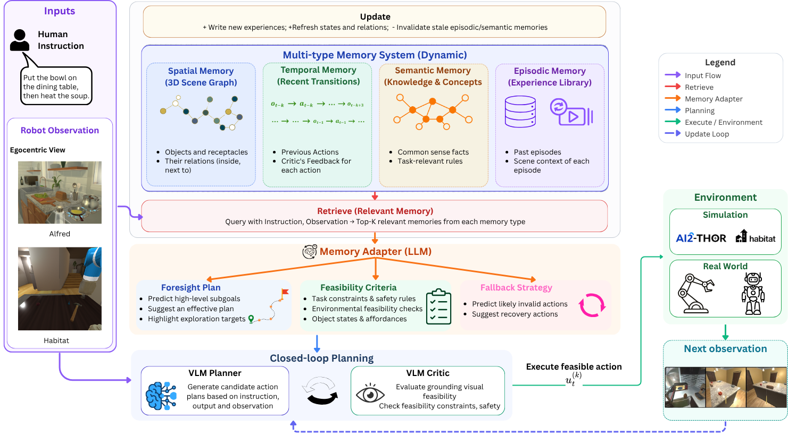

1. Retrieve Multi-type Memories
A multi-memory system retrieves the top-K task-relevant spatial, temporal, episodic, and semantic memories given the instruction and current observation.
A plug-and-play Memory Adapter that converts heterogeneous retrieved memories into structured, verifiable, and recovery-aware planning guidance for VLM-based embodied agents — without modifying the memory system or the planner.

MemAdapter converts retrieved memories into structured guidance that supports closed-loop embodied planning.
Memory-augmented Vision-Language Model (VLM) planning is a promising approach for long-horizon embodied tasks under partial observability. Existing systems typically retrieve task-relevant memories and inject them directly into the planner, but raw memories are often verbose, heterogeneous, and unstructured, making them difficult for the planner to use. We propose MemAdapter, a plug-and-play Memory Adapter that, conditioned on the task instruction, converts retrieved memories into structured, task-level guidance comprising a foresight plan for global task sequencing, feasibility criteria for critic-based action verification, and a fallback strategy for failure recovery.
Producing such guidance requires specialized reasoning that a compact LLM cannot reliably perform without dedicated training. We therefore train MemAdapter without manual annotation: we synthesize expert guidance targets with a frontier LLM, retain only those that do not degrade closed-loop execution via behavioral consensus filtering, and distill the filtered data into a compact 14B adapter through supervised fine-tuning. On 400 tasks from the EB-ALFRED and EB-Habitat environments of EmbodiedBench, with a frozen Qwen2.5-VL-72B-Instruct planner, our framework attains a 79.50% average success rate — improving over the strongest memory-augmented framework under the same planner (RoboMemory) by 12.75 points, and surpassing the strongest standalone VLM agent (Claude-3.5-Sonnet) by 8.75 points despite building on a far weaker standalone planner. These results show that effective memory-augmented embodied planning requires not only retrieving memory but also adapting it into explicit, verifiable, and recovery-aware planning guidance.
A multi-memory system retrieves the top-K task-relevant spatial, temporal, episodic, and semantic memories given the instruction and current observation.
Invoked once per task, MemAdapter transforms the heterogeneous retrieved memories into a fixed, task-level guidance package consumed by the planner and critic.
A frozen VLM planner proposes short action plans grounded in guidance; a critic verifies feasibility; accepted actions execute and the memory updates for the next step.

Overview of the MemAdapter-enabled framework for memory-guided embodied planning.
A task-level hypothesis describing high-level subgoals, likely search locations, necessary state changes, and the expected final condition — supplying global foresight for the planner.
Per-action preconditions for the critic — visual-grounding requirements, object-state constraints, and affordance checks — that reduce hallucinated, infeasible, or task-inconsistent actions.
Recovery behavior for likely failure modes, invoked when the critic rejects an action or the observation contradicts the plan, grounding replanning in memory-derived locations and failure patterns.
A compact LLM cannot produce reliable structured guidance zero-shot, yet manually annotating guidance for household tasks is costly. We therefore train MemAdapter with an automated pipeline that needs no manual annotation: a frontier LLM synthesizes expert guidance, behavioral consensus filtering removes targets that hurt execution, and supervised fine-tuning distills the rest into a compact 14B adapter.
For each (instruction, retrieved-memory) pair, a frontier LLM generates an expert-style target G⋆ = {P⋆, C⋆, F⋆}. Conditioning on retrieved object locations, episodes, and rules keeps targets memory-grounded rather than generic.
Behavioral consensus filtering: an expert and a novice planner each run the task with and without the candidate guidance. A target is kept only if it does not lower goal-condition completion for either planner — discarding guidance that degrades closed-loop execution.
The filtered MemGuide data is distilled into a compact Qwen3-14B adapter via supervised fine-tuning, training it to map (instruction, memory) to structured, memory-grounded guidance.
Success rate on the EB-ALFRED Long-Horizon subset — a +54-point jump from the same backbone, landing within 2 points of the prompted GPT-5.1 skyline (74%). The gains come from distilling the memory-to-guidance transformation, not from raw model capacity.
MemAdapter reads each memory type and emits exactly three XML-tagged blocks. The skeleton on the left is the output contract; the rules on the right keep each block concise and critic-friendly. The complete prompt, with few-shot examples, ships with the code release.
<FORESIGHT_PLAN>
- Step 1: ...
- Step 2: ...
</FORESIGHT_PLAN>
<FEASIBILITY_CRITERIA>
- "<sub-task>": <condition>
</FEASIBILITY_CRITERIA>
<FALLBACK_STRATEGY>
- If "<failure>": <recovery>
</FALLBACK_STRATEGY>High-level walkthrough of the MemAdapter framework and planning loop.
Example of robust long-horizon completion with memory-structured guidance.
Example where the agent revises invalid action decisions using structured fallback guidance.
Example highlighting feasibility checks after invalid or failed actions.
79.50%
Average success rate
+12.75
Points over RoboMemory (same planner)
+8.75
Points over Claude-3.5-Sonnet standalone agent
400
Tasks from EB-ALFRED and EB-Habitat in EmbodiedBench
| Method | Average | EB-ALFRED | EB-Habitat | ||||||
|---|---|---|---|---|---|---|---|---|---|
| Base | Common | Complex | Long | Base | Common | Complex | Long | ||
| Standalone closed-source VLM agents | |||||||||
| GPT-4o | 61.25 | 64.0 | 54.0 | 68.0 | 54.0 | 86.0 | 44.0 | 56.0 | 64.0 |
| Claude-3.7-Sonnet | 66.00 | 68.0 | 68.0 | 70.0 | 70.0 | 90.0 | 58.0 | 58.0 | 46.0 |
| Claude-3.5-Sonnet | 70.75 | 72.0 | 66.0 | 76.0 | 52.0 | 96.0 | 68.0 | 78.0 | 58.0 |
| Gemini-1.5-Pro | 63.50 | 70.0 | 64.0 | 72.0 | 58.0 | 92.0 | 52.0 | 48.0 | 52.0 |
| Gemini-2.0-Flash | 50.75 | 62.0 | 48.0 | 54.0 | 58.0 | 82.0 | 38.0 | 38.0 | 26.0 |
| Standalone open-source VLM agents | |||||||||
| Llama-3.2-90B-Vision-Ins | 39.25 | 38.0 | 34.0 | 44.0 | 16.0 | 94.0 | 24.0 | 50.0 | 14.0 |
| InternVL2.5-78B | 45.25 | 38.0 | 34.0 | 42.0 | 42.0 | 80.0 | 42.0 | 56.0 | 28.0 |
| InternVL3-78B | 51.25 | 42.0 | 34.0 | 48.0 | 44.0 | 84.0 | 58.0 | 60.0 | 40.0 |
| InternVL3.5-38B | 43.0 | 54.0 | 38.0 | 48.0 | 28.0 | 76.0 | 38.0 | 40.0 | 22.0 |
| Qwen2.5-VL-72B-Ins | 41.25 | 50.0 | 42.0 | 42.0 | 34.0 | 74.0 | 28.0 | 42.0 | 18.0 |
| VLM-agent frameworks | |||||||||
| Voyager (Qwen2.5-VL-72B-Ins) | 44.75 | 56.0 | 46.0 | 40.0 | 32.0 | 76.0 | 38.0 | 50.0 | 22.0 |
| Reflexion (Qwen2.5-VL-72B-Ins) | 38.38 | 48.0 | 32.0 | 44.0 | 10.0 | 80.0 | 36.0 | 42.0 | 15.0 |
| Cradle (Qwen2.5-VL-72B-Ins) | 40.5 | 54.0 | 40.0 | 44.0 | 32.0 | 62.0 | 24.0 | 38.0 | 30.0 |
| RoboOS (Qwen2.5-VL-72B-Ins) | 27.75 | 32.0 | 26.0 | 38.0 | 12.0 | 38.0 | 26.0 | 30.0 | 20.0 |
| RoboOS (RoboBrain2-32B) | 18.50 | 32.0 | 20.0 | 22.0 | 8.0 | 28.0 | 10.0 | 24.0 | 12.0 |
| RoboMemory (Qwen2.5-VL-72B-Ins) | 66.75 | 68.0 | 70.0 | 64.0 | 66.0 | 86.0 | 56.0 | 62.0 | 62.0 |
| Ours (Qwen2.5-VL-72B-Ins) | 79.50 | 78.0 | 78.0 | 82.0 | 72.0 | 96.0 | 84.0 | 80.0 | 66.0 |
Bold = best per column, underline = second best. All agent-framework baselines use Qwen2.5-VL-72B-Instruct as the planner (temperature 0); RoboOS additionally uses its purpose-built RoboBrain2-32B backbone.
A single closed-loop case from EB-ALFRED shows MemAdapter at work: it reads verbose, heterogeneous retrieved memory and distills it into a foresight plan, feasibility criteria, and a fallback strategy — resolving an ambiguous instruction and preempting an action failure that recurs across the retrieved episodes.
Instruction: “Heat a bread slice and put it on the table by the spoon.”
[Spatial Memory] Spoon in DiningTable Bread in DiningTable_2 Plate in DiningTable Toaster in DiningTable Mug in Microwave ButterKnife in Drawer DiningTable_2 contains Bread, ButterKnife_3, PepperShaker, Pot_2 ... [Episodic Memory] (similar past episodes, retrieved) Instruction: "Place a hot bread slice on the table" Step 4: pick up the Bread. -> INVALID: robot is holding Knife. Put it down first. Step 5: drop the held object. -> success ... Step 18: find a DiningTable. -> near DiningTable Step 19: put down object. -> placed on DiningTable (success) Instruction: "Heat a piece of apple and place it in the fridge" Step 4: pick up the Apple. -> INVALID: robot is holding Knife. Put it down first. ... (gripper-conflict failures recur across these heat-and-place episodes) [Semantic Memory] - [precondition] To heat a bread slice, it must be placed inside the microwave before turning it on. - [task_rule] A hot bread slice can be placed on a table after being heated in a microwave. - [affordance] A spoon can be picked up and placed on a dining table.
Steps 1–8
Steps 9–18
Steps 19–21
Per-action preconditions the critic checks before execution.
Recovery actions triggered on rejection or failure.
“By the spoon” is ambiguous, and a Spoon is not a valid surface. Using spatial memory (the Spoon sits on the DiningTable) and semantic rules, MemAdapter grounds it as near the spoon, placing the slice on the DiningTable.
Naive: stack bread on the Spoon → invalid receptacle | Guided: place on DiningTable near the Spoon → successPast episodes fail with “can't pick Bread — robot is holding Knife.” The foresight plan proactively puts the Knife down (Step 6) before picking up the slice, and the fallback re-clears the gripper if it ever recurs.
Raw memory: pick Bread while holding Knife → INVALID | Guided: put Knife down first → successOur setup is designed for a fair comparison, not a favorable one. By controlling for model capacity, memory access, and evaluation protocol, we isolate the impact of memory-structured guidance and ensure that any performance gains come from the quality of the guidance itself rather than confounding factors.
The planner and critic stay frozen; the lone trainable component is a LoRA-tuned Qwen3-14B adapter on a single node.
controls for model capacityEvery memory-augmented VLM planning framework baseline follows the same memory protocol, detailed below, while each framework maintains its own native memory module.
controls for memory accessAll agent-framework baselines run on the same Qwen2.5-VL-72B planner with deterministic decoding (temperature 0, single trial); EmbodiedBench's executor isolates planning from low-level control.
controls for evaluationThe standalone Qwen2.5-VL-72B-Instruct agent runs all 400 tasks, accumulating experience as it goes.
The accumulated memory is frozen, so the experience available at evaluation is fixed.
Every framework is evaluated under this same protocol, each accessing memory through its own module.
The protocol is identical across frameworks and driven by the base planner itself, not a stronger external agent, so no framework benefits from a more favorable memory setup.
Base weights frozen in bf16 with FlashAttention-2; trained only on the filtered MemGuide targets. Full config ships with the code release.
@article{nguyen2026memadapter,
title = {MemAdapter: Structuring Retrieved Memories for VLM-Based Embodied Planning},
author = {Nguyen, Thuan Minh and Le, Long Bao},
year = {2026}
}